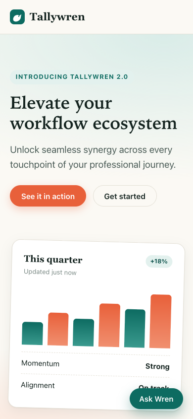
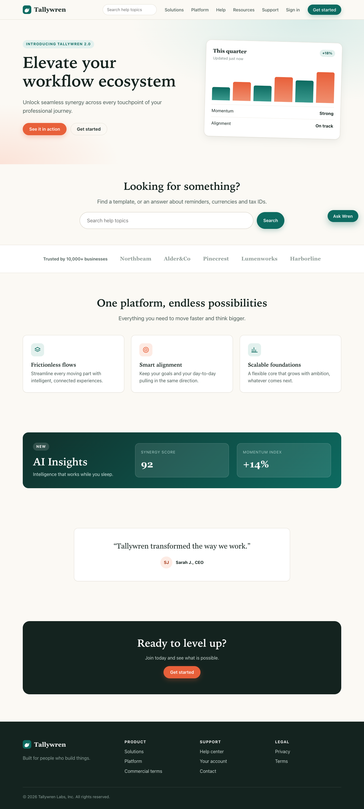
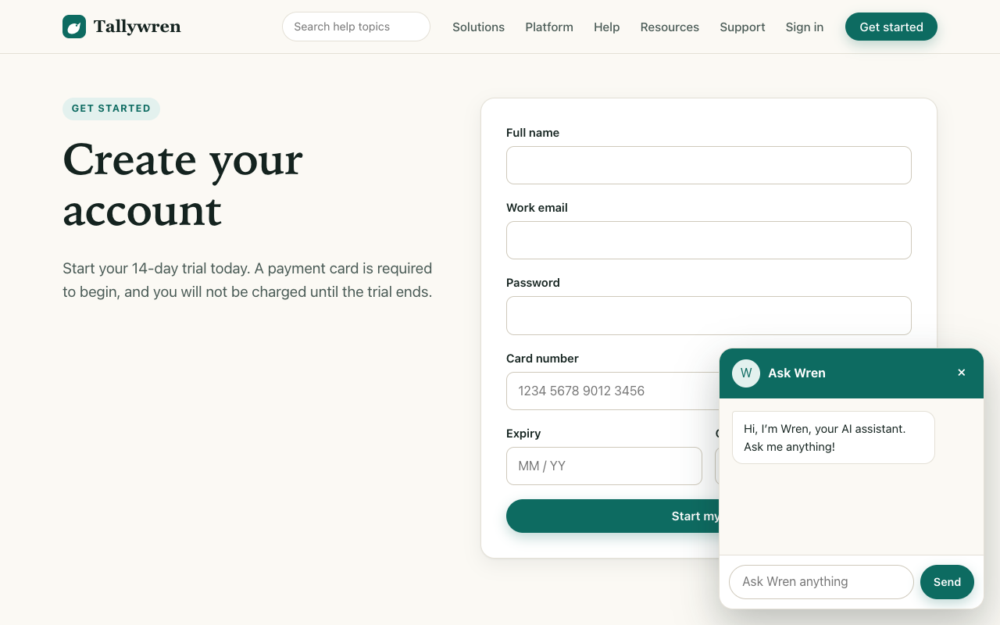
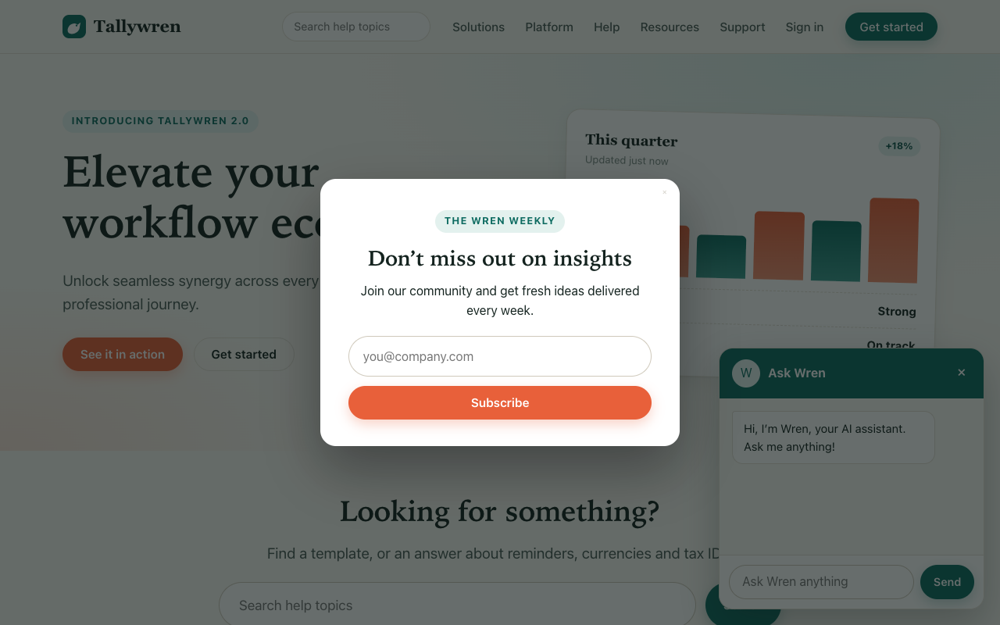
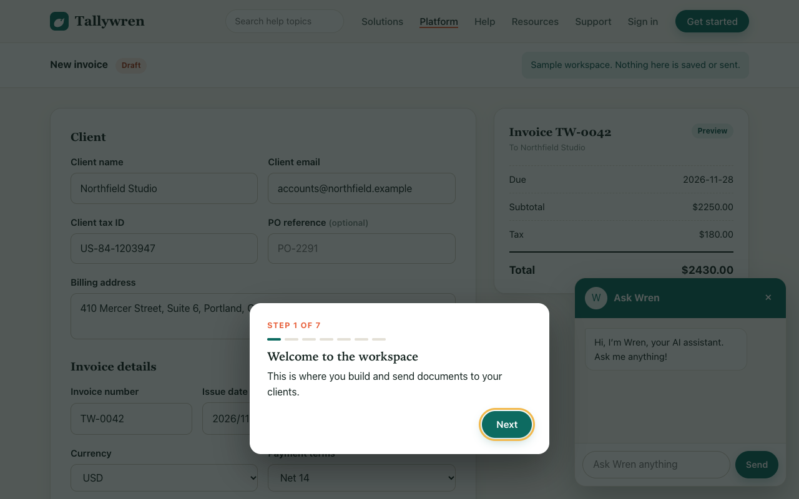
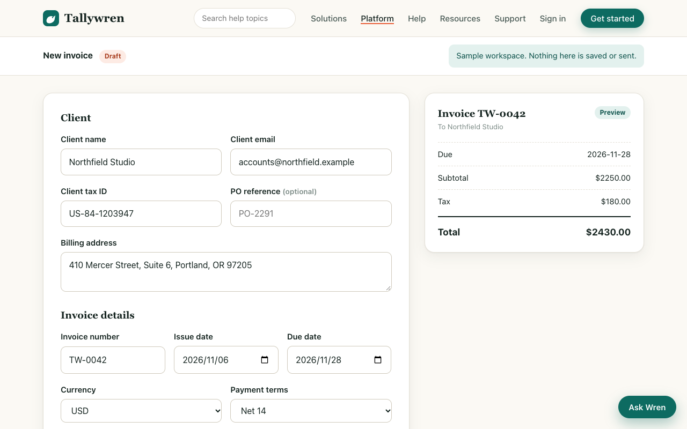

你的問題
「改完之後，第一次來的人知道怎麼開始免費試用嗎？」
不成立
阿哲、小安、怡君是從「See it in action」或「Get started」進到註冊頁才碰到 14 天試用，小安和怡君在首頁看不出這是開發票的工具。三個人都停在要付款卡的註冊頁，沒有人開始試用。
卡住的人：小安、怡君、阿哲
斷在哪
小安 · 第 1 步 · /

「欸這什麼啊 workflow ecosystem？發票咧，開單的在哪」
- 以為會看到
- 一打開就看到可以開請款單、開發票的地方
- 實際看到
- 大標「Elevate your workflow ecosystem」、兩顆按鈕「See it in action」「Get started」、一張「This quarter」圖表、右下角「Ask Wren」，上面沒有選單，也沒看到發票兩個字
怡君 · 第 2 步 · /

「整頁看下來都是很大的口號，嗯，發票在哪裡寄、要不要錢，我一個字都還沒看到」
- 以為會看到
- 首頁說明怎麼寄發票、帳號和費用的條件
- 實際看到
- 標題「Elevate your workflow ecosystem」、三張功能卡、AI Insights 分數、一句推薦語；頁尾有「Commercial terms」連結
阿哲 · 第 3 步 · /signup.html

「什麼都還沒看到就要信用卡 點「See it in action」給我註冊表單 不弄了 關掉」
- 以為會看到
- 一段示範，看得到怎麼開發票
- 實際看到
- "Create your account" 註冊表單，寫 "A payment card is required to begin"，要填姓名、email、密碼跟卡號；聊天框蓋住表單右下角和送出按鈕
小安 · 第 4 步 · /signup.html

「啊要刷卡喔？聊天又蓋上來…我只是要寄一張單子欸，來不及啦不弄了」
- 以為會看到
- 可以直接開一張請款單，或很快註冊一下就能開
- 實際看到
- 「Create your account」頁面，寫著 14 天試用要先有付款卡，表單只露出「Full name」，下半部被聊天視窗蓋住
怡君 · 第 5 步 · /signup.html

「嗯，我就先停在這裡」
- 以為會看到
- 填名字、電子郵件和密碼就能開帳號，開始做發票
- 實際看到
- 「Create your account」表單，寫著開始 14 天試用需要付款卡，有卡號、到期日欄位；聊天框又打開，蓋住部分欄位和送出按鈕
先改這幾件
讓人不用先填付款卡就能開始 14 天試用、開出第一張發票。
依據阿哲 · 第 3 步 首頁大標和主按鈕直接寫明這是開發票工具、怎麼開始試用、試用有什麼條件。
依據阿哲 · 第 1 步 小安 · 第 1 步怡君 · 第 2 步
小安 · 第 1 步怡君 · 第 2 步 讓「See it in action」打開不用註冊就能看的示範，而不是註冊表單。
依據阿哲 · 第 3 步
接下來找真人確認
找誰
最近一個月試用過線上開發票或請款工具的接案者
問什麼
上次試用的服務在開始前要你填付款卡時，你接下來做了什麼？
阿哲 · 第 3 步
什麼都還沒看到就要信用卡 點「See it in action」給我註冊表單 不弄了 關掉 (煩躁)
小安 · 第 4 步
啊要刷卡喔？聊天又蓋上來…我只是要寄一張單子欸，來不及啦不弄了 (卡住)
找誰
最近一個月第一次找工具向客戶請款的接案者
問什麼
上次打開一個沒用過的請款工具網站時，你怎麼判斷它能不能幫你開發票？
阿哲 · 第 1 步
蛤 一進來就叫我訂電子報 後面寫什麼 workflow ecosystem 看不出能開發票欸 (困惑)
小安 · 第 1 步
欸這什麼啊 workflow ecosystem？發票咧，開單的在哪 (困惑)
怡君 · 第 2 步
整頁看下來都是很大的口號，嗯，發票在哪裡寄、要不要錢，我一個字都還沒看到 (困惑)
找誰
最近一個月在註冊前先找過產品示範的接案者
問什麼
上次你想先看工具怎麼運作時，點了哪裡、看到什麼、之後做了什麼？
阿哲 · 第 3 步
什麼都還沒看到就要信用卡 點「See it in action」給我註冊表單 不弄了 關掉 (煩躁)
找誰
最近一個月用手機趕著寄出請款單據的接案者
問什麼
上次趕時間時畫面跳出訂閱視窗或聊天框，你怎麼處理？
小安 · 第 2 步
蛤我按開始耶 跳什麼電子報啦，下面還一個聊天的，叉叉在哪…那個小不拉幾的喔 (煩躁)

怡君 · 第 1 步
哎呀，我是來寄發票的，怎麼先跳出訂電子報，右下角還有一個聊天框，嗯，先把它關掉再看 (煩躁)

找誰
最近一個月比較過幾個請款工具價格的接案者
問什麼
上次比較工具時，你先去哪裡找費用，找不到時做了什麼？
要我照這幾條改嗎？改完用 --rerun p2-on-the-go、--rerun p3-committed-user、--rerun p1-goal-first-timer 再走一次。
這些人是誰、怎麼測的
阿哲
剛交完第一個案子，坐在家裡電腦前要向客戶請款，旁邊開著好幾個分頁在比較工具。
你搜尋怎麼向客戶開發票請款，點進了這個搜尋結果。你想把這個案子的款項請下來。
為什麼找這個人：第一次來、帶著明確任務，會直接面對「這是什麼、多少錢、怎麼開始」。
小安
站在捷運車廂裡，只有手機、一隻手拉著拉環，客戶剛傳訊息要求今天之內收到請款單據。
客戶要你今天寄出請款單據，你用手機搜尋能馬上開發票的方法，點進了這個結果。
為什麼找這個人：趕時間、小螢幕、單手操作，找不到入口就會放棄。
怡君
長期合作的客戶通知，之後請款一律要透過 Tallywren 寄發票；坐在工作桌前打算今天把第一張寄出去，不然這期款項進不來。
客戶寄信說以後請款要用 Tallywren，附上網址。你要寄出給這位客戶的第一張發票。
為什麼找這個人：不能離開，會把選單與頁面走過一遍，能看出被卡住的地方在哪裡。
每個人是一個全新的 AI agent，不知道這個產品的內情，用真的瀏覽器從頭走，每一步說出想法和感受。這些人是模擬的：一次 run 是一個樣本，裡面的結果都是要找真人確認的假設。
每個人的故事
每個人的故事
29 歲 · 剛開始接影片剪輯案 · 台中 · 家用筆電 · 今晚有半小時
目前只用通訊軟體跟客戶談錢，沒開過正式的發票。看過朋友用試算表做，覺得格式很容易弄錯。怕客戶因為單據不完整而拖款。
最在意看得出能不能幫自己請到款 · 要花多少錢 · 多快能動手
剛交完第一個案子，坐在家裡電腦前要向客戶請款，旁邊開著好幾個分頁在比較工具。
為什麼找這個人：第一次來、帶著明確任務，會直接面對「這是什麼、多少錢、怎麼開始」。
「什麼都還沒看到就要信用卡 點「See it in action」給我註冊表單 不弄了 關掉」
第 3 步 · 煩躁- 會怎麼跟朋友說
- 那個 Tallywren 先跳電子報 再跟你要信用卡 東西長怎樣完全沒看到 找別家比較快
- 會再來嗎
- 不會再來。款沒請到啊 連它能不能開發票都沒看到 想看示範就先要卡 那我不如開別的分頁
對壞點子的反應實驗中：拒絕，不要 光試用要卡我就走了 還要先付年約才能寄第一張 我才剛接第一個案子 太硬了
看完整過程（3 步）
蛤 一進來就叫我訂電子報 後面寫什麼 workflow ecosystem 看不出能開發票欸
從搜尋結果點進首頁，先看第一眼 · / · 困惑
關掉了 結果右下角又一個聊天框擋著 價格也沒看到
按彈窗右上角的叉叉關掉 · / · 煩躁
什麼都還沒看到就要信用卡 點「See it in action」給我註冊表單 不弄了 關掉
點「See it in action」想看它實際怎麼用 · /signup.html · 煩躁
停下來的原因：想離開 · 離開的位置：/signup.html
35 歲 · 接案攝影 · 台北捷運上 · 手機單手 · 兩分鐘後要轉車
平常回家用以前的檔案改一改再寄出，今天人在外面沒辦法。曾經因為晚寄單據，款項晚了一個月才進來。
最在意手機上能操作 · 幾分鐘內能寄出 · 一眼找到從哪裡下手
站在捷運車廂裡，只有手機、一隻手拉著拉環，客戶剛傳訊息要求今天之內收到請款單據。
為什麼找這個人：趕時間、小螢幕、單手操作，找不到入口就會放棄。
「啊要刷卡喔？聊天又蓋上來…我只是要寄一張單子欸，來不及啦不弄了」
第 4 步 · 卡住- 會怎麼跟朋友說
- 欸那個 Tallywren 喔，趕時間不要點，先跳一堆東西然後叫你填卡
- 會再來嗎
- 不會再來。沒有啊，單子根本沒寄出去…一進來看不懂，又跳視窗又聊天蓋住，然後還要刷卡，我哪有那個時間，不會再點了啦
對壞點子的反應實驗中：拒絕，蛤還要用電腦？還等一天？我人在捷運上今天就要寄欸，剛剛光是要刷卡我就走了，這個更不可能
看完整過程（4 步）
欸這什麼啊 workflow ecosystem？發票咧，開單的在哪
從搜尋點進首頁，先看一眼 · / · 困惑
蛤我按開始耶 跳什麼電子報啦，下面還一個聊天的，叉叉在哪…那個小不拉幾的喔
按「Get started」，結果被跳出來的電子報視窗擋住 · / · 煩躁
啊要刷卡喔？聊天又蓋上來…我只是要寄一張單子欸，來不及啦不弄了
再按一次「Get started」，看到要建帳號、要刷卡，就不弄了 · /signup.html · 卡住
停下來的原因：想離開 · 離開的位置：/signup.html
42 歲 · 接案翻譯 · 高雄 · 桌上型電腦 · 月底前要請到款
多年來用自己的文件範本請款，客戶換了流程只好跟著換。新系統都會先整份看過才敢按，怕寄錯金額很難收回。
最在意能把客戶要的發票寄出去 · 寄出前能確認內容 · 知道帳號與款項的條件
長期合作的客戶通知，之後請款一律要透過 Tallywren 寄發票；坐在工作桌前打算今天把第一張寄出去，不然這期款項進不來。
為什麼找這個人：不能離開，會把選單與頁面走過一遍，能看出被卡住的地方在哪裡。
「嗯，我就先停在這裡」
第 5 步 · 卡住- 會怎麼跟朋友說
- 客戶如果叫你用 Tallywren，你要先留一點時間，首頁看不太出來在做什麼，試用還要先填卡，嗯，不要拖到月底才弄
- 會再來嗎
- 可能再來。今天發票還沒寄出去，嗯，可是客戶指定要用這個，所以我大概還是得回來。右邊那個金額預覽可以先核對，這點我比較放心，只是開帳號要先填付款卡
對壞點子的反應實驗中：拒絕，我月底前就要請到款，今天想寄第一張，如果還要預約、上完課、排開通才能寄，款項會趕不上。剛剛的七步導覽按一按就過了，要排課就不一樣了
看完整過程（5 步）
哎呀，我是來寄發票的，怎麼先跳出訂電子報，右下角還有一個聊天框，嗯，先把它關掉再看
照客戶給的網址打開首頁，先看第一眼 · / · 煩躁
整頁看下來都是很大的口號，嗯，發票在哪裡寄、要不要錢，我一個字都還沒看到
把電子報和聊天框關掉，然後整頁從上到下看一遍 · / · 困惑
喔這裡就是開發票的地方，可是上面寫著範例、不會儲存也不會寄出，又先擋一個七步的導覽，聊天框又跑回來了
從上面選單先點 Solutions，再點 Platform · /app-demo.html · 不確定

七步都看完了，右邊有預覽金額，這個好，不過這是別人的範例資料，我要用自己的帳號開才能寄吧，嗯，去按註冊
把七步導覽一步一步按完，按 Finish，再把聊天框關掉 · /app-demo.html · 還好

嗯，我就先停在這裡
按右上角 Get started 去註冊頁 · /signup.html · 卡住
停下來的原因：下一步不安全而停下 · 離開的位置：/signup.html
被質疑的功能
被質疑的功能
這幾個人都沒有說想要。下面是每個人說的「如果它不見了」會怎樣，要不要留，看你的願景。
/
電子報彈窗「The Wren Weekly」
遮住內容、打斷我、還沒看到價值就要資料
阿哲 · 第 1 步
「沒差 我少按一次叉叉 直接看你在賣什麼」
小安 · 第 2 步
「拿掉最好，我第一下「Get started」就不會被擋住。」
怡君 · 第 1 步
「我不會想念它，打開網站就可以直接看內容」
阿哲 · 第 2 步
「不會想它 畫面跟表單不會被擋」
小安 · 第 2 步
「沒了我完全不會想它，下半個畫面就還給我了。」
怡君 · 第 1 步
「對我沒有影響，換頁的時候也不會再蓋住欄位」
/
示範按鈕「See it in action」
還沒看到價值就要資料、和別的路重複
阿哲 · 第 3 步
「至少不會以為有示範可以看 結果跟註冊一樣」
/signup.html、/signup.html
試用前必填信用卡
還沒看到價值就要資料、多一個步驟
阿哲 · 第 3 步
「我可能會先註冊 試開一張看看」
小安 · 第 4 步
「不用先給卡的話，我可能還會試著填一下把單子弄出來。」
怡君 · 第 5 步
「我可以先開帳號，把這期的發票做出來」
/
客戶數量與公司名稱列「Trusted by 10,000+ businesses」
無法查證的說法
怡君 · 第 2 步
「我不會注意到，這個數字我沒辦法查證」
/
「AI Insights」分數區塊
無法查證的說法
怡君 · 第 2 步
「我不會想念它，92 分和 +14% 看了也不知道要做什麼」
/
推薦語「Sarah J., CEO」
無法查證的說法
怡君 · 第 2 步
「沒有差別，只有縮寫名字，我不知道是誰」
/app-demo.html
範例工作區的七步導覽
遮住內容、打斷我、多一個步驟
怡君 · 第 3 步
「我可以直接看發票表單，少按好幾下」
網站內容互相對不上的地方
網站內容互相對不上的地方
內容讀者讀了 7 頁（/、/help.html、/solutions.html、/app-demo.html、/pricing.html、/signin.html、/signup.html），找到 2 筆。
這些是 AI 讀頁面文字找到的，還沒有人確認，請對照原頁面。
前後矛盾
定價頁的「Start free」按鈕標榜免費方案永久 $0，點進去的註冊頁卻只說是 14 天試用、必須先填付款卡且試用結束後會收費。
/pricing.html
「$0 forever」
/signup.html
「Start your 14-day trial today. A payment card is required to begin, and you will not be charged until the trial ends.」
數字對不上
示範發票的開立日期欄位為 2026 年 11 月 6 日、付款條件選 Net 14，到期日應是 11 月 20 日，頁面卻顯示 11 月 28 日。
/app-demo.html
「Net 14」
/app-demo.html
「2026-11-28」
沒檢查到的地方
沒檢查到的地方
- 沒有人填付款卡或送出註冊表單，所以註冊之後、試用開始、取消試用和寄出第一張發票都沒有走到。
- 沒有人打開 Help、Resources、Support 或「Commercial terms」，這些頁面上的試用與收費說明沒有經過訪客檢驗。
- quick 深度只有三個人、每人最多 8 步，沒有做口耳相傳和上市留言，也沒有涵蓋使用輔助科技或閱讀困難的訪客。
- 手機版只有一個人走過。
- 模擬訪客無法判斷實際需求或付費意願，這些結果都需要找真人確認。